A graphic novel is a book made up of comics content. Although the word "novel" normally refers to long fictional works, the term "graphic novel" is applied broadly and includes fiction, non-fiction, manga, and anthologized work. Graphic novels are similar to comic books because they use sequential art to tell a story. Unlike comic books, graphic novels are generally stand-alone stories with more complex, personal narratives.
Whether you're a seasoned comic geek or just diving in, this selection of essential graphic novels is an excellent starting point for exploring the genre.
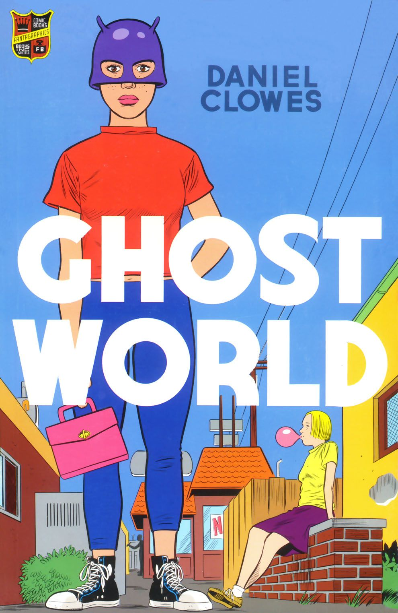
Ghost World
By Daniel Clowes
Ghost World has become a cultural and generational touchstone, and continues to enthrall and inspire readers over a decade after its original release as a graphic novel. Originally serialized in the pages of the seminal comic book Eightball throughout the mid-1990s, this quasi-autobiographical story (the name of one of the protagonists is famously an anagram of the author's name) follows the adventures of two teenage girls, Enid and Becky, two best friends facing the prospect of growing up, and more importantly, apart. Daniel Clowes is one of the most respected cartoonists of his generation, and Ghost World is his magnum opus. This graphic novel is a must for any self-respecting comics fan's library.
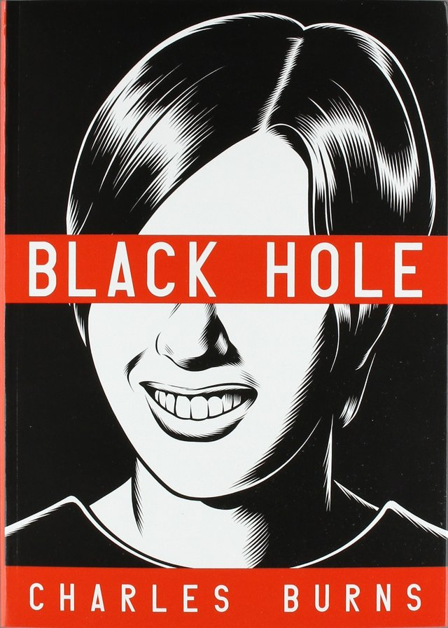
Black Hole
By Charles Burns
Suburban Seattle, the mid-1970s. We learn from the out-set that a strange plague has descended upon the area’s teenagers, transmitted by sexual contact. The disease is manifested in any number of ways — from the hideously grotesque to the subtle (and concealable) — but once you’ve got it, that’s it. There’s no turning back. As hypnotically beautiful as it is horrifying, Black Hole transcends its genre by deftly exploring a specific American cultural moment in flux and the kids who are caught in it- back when it wasn’t exactly cool to be a hippie anymore, but Bowie was still just a little too weird.
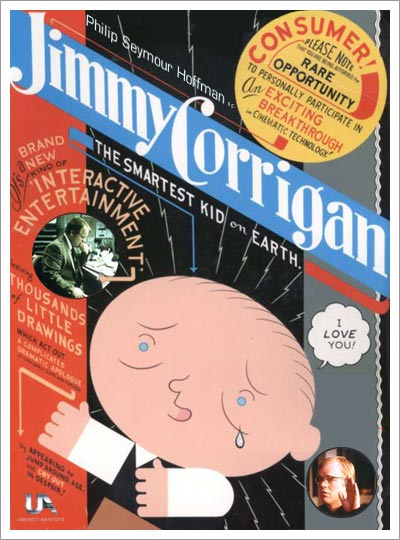
Jimmy Corrigan
By Chris Ware
Jimmy Corrigan has rightly been hailed as the greatest graphic novel ever to be published. It won the Guardian First Book Award 2001, the first graphic novel to win a major British literary prize.
It is the tragic autobiography of an office dogsbody in Chicago who one day meets the father who abandoned him as a child. With a subtle, complex and moving story and the drawings that are as simple and original as they are strikingly beautiful, Jimmy Corrigan is a book unlike any other and certainly not to be missed.
The Complete Maus
By Art Spiegelman
Combined for the first time here are Maus I: A Survivor's Tale and Maus II - the complete story of Vladek Spiegelman and his wife, living and surviving in Hitler's Europe. By addressing the horror of the Holocaust through cartoons, the author captures the everyday reality of fear and is able to explore the guilt, relief and extraordinary sensation of survival - and how the children of survivors are in their own way affected by the trials of their parents. A contemporary classic of immeasurable significance.
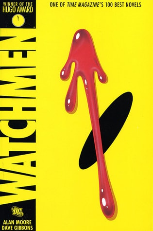
Watchmen
By Alan Moore
This Hugo Award-winning graphic novel chronicles the fall from grace of a group of super-heroes plagued by all-too-human failings. Along the way, the concept of the super-hero is dissected as the heroes are stalked by an unknown assassin.
One of the most influential graphic novels of all time and a perennial best-seller, Watchmen has been studied on college campuses across the nation and is considered a gateway title, leading readers to other graphic novels such as V for Vendetta, Batman: The Dark Knight Returns and The Sandman series.
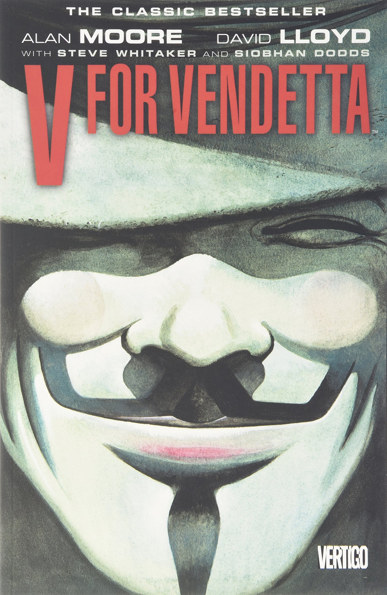
V for Vendetta
By Alan Moore
Set in an imagined future England that has given itself over to fascism, this groundbreaking story captures both the suffocating nature of life in an authoritarian police state and the redemptive power of the human spirit which rebels against it. Crafted with sterling clarity and intelligence, V for Vendetta brings an unequaled depth of characterization and verisimilitude to its unflinching account of oppression and resistance.
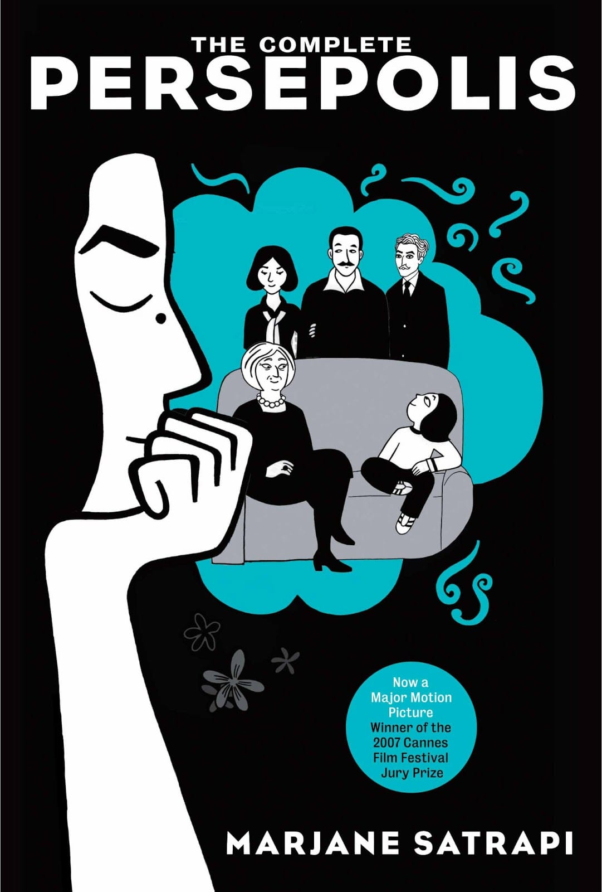
The Complete Persepolis
By Marjane Satrapi
Persepolis is the story of Satrapi's unforgettable childhood and coming of age within a large and loving family in Tehran during the Islamic Revolution; of the contradictions between private life and public life in a country plagued by political upheaval; of her high school years in Vienna facing the trials of adolescence far from her family; of her homecoming--both sweet and terrible; and, finally, of her self-imposed exile from her beloved homeland. It is the chronicle of a girlhood and adolescence at once outrageous and familiar, a young life entwined with the history of her country yet filled with the universal trials and joys of growing up.
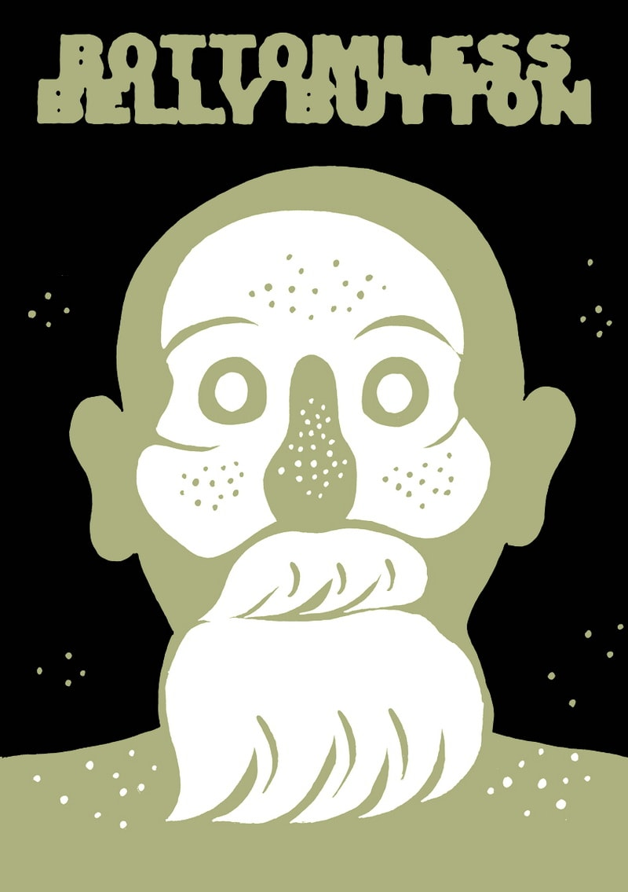
Bottomless Belly Button
By Dash Shaw
After 40-some years of marriage, Maggie and David Loony shock their children with their announcement of a planned divorce. But the reason for splitting isn't itself shocking: they’re "just not in love any more." The announcement sparks a week long Loony family reunion at Maggie and David's creepy (and possibly haunted) beach house.
Visually, Shaw employs a leisurely storytelling pace that allows room for exploring the interconnecting relationships among the characters and plays to his strength as a cartoonist — small gestural details and nuanced expressions that bring the characters to vivid and intimate life.
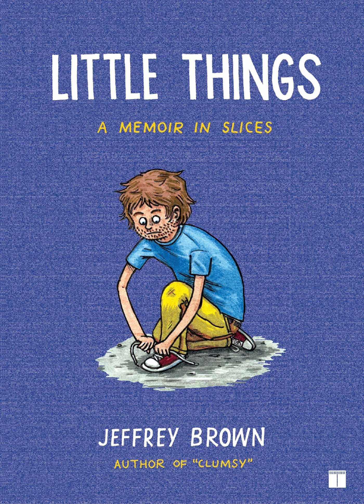
Little Things
By Jeffrey Brown
A collection of funny, poignant, and autobiographical short stories, Little Things looks at the aspects of daily life -- friendship, illness, death, work, crushes, love, jealousy, and fatherhood -- we take for granted. As each story loops into others, Jeffrey Brown shows how the smallest andseemingly most insignificant parts of everyday life can end up becoming the most meaningful. Brown's first full-length autobiographical book in several years, Little Things is also his most impressive, touching, and true.
Asterios Polyp
By David Mazzucchelli
Meet Asterios Polyp: middle-aged, meagerly successful architect and teacher, aesthete and womanizer, whose life is wholly upended when his New York City apartment goes up in flames. In a tenacious daze, he leaves the city and relocates to a small town in the American heartland. But what is this “escape” really about?
As the story unfolds, moving between the present and the past, we begin to understand this confounding yet fascinating character, and how he’s gotten to where he is. And isn’t. And we meet Hana: a sweet, smart, first-generation Japanese American artist with whom he had made a blissful life. But now she’s gone. Did Asterios do something to drive her away? What has happened to her? Is she even alive? All the questions will be answered, eventually.
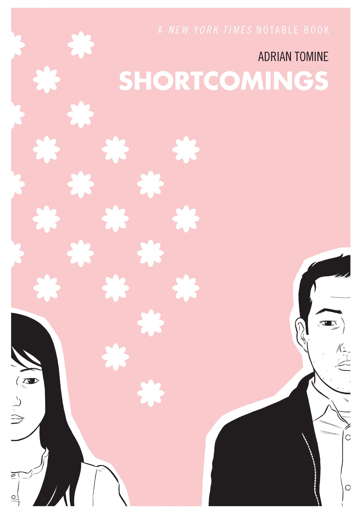
Shortcomings
By Adrian Tomine
Shortcomings, Adrian Tomine's first long-form graphic novel, is the story of Ben Tanaka, a confused, obsessive Japanese American male in his late twenties, and his cross-country search for contentment (or at least the perfect girl). Along the way, Tomine tackles modern culture, sexual mores, and racial politics with brutal honesty and lacerating, irreverent humor, while deftly bringing to life a cast of painfully real antihero characters.
Box Office Poison
By Alex Robinson
This epic story of Sherman, Dorothy, Ed, Stephen, Jane, and Mr. Flavor is not to be missed. Alex Robinson's completely natural and inspiring knack for dialogue has made his story of dreary jobs, comic books, love, sex, messy apartments, girlfriends (and the lack thereof), undisclosed pasts, and crusty old professionals one of the most delightful and whimsical graphic novels to hit the stands in years.
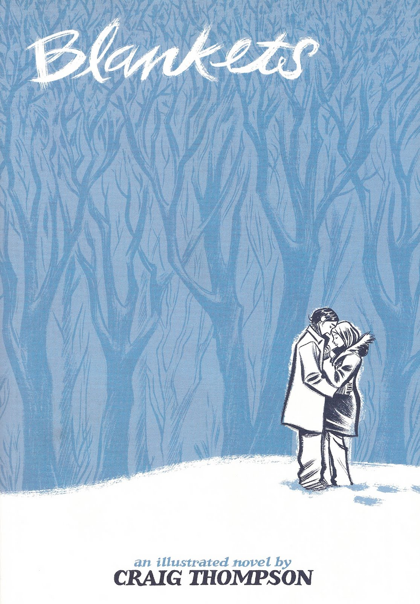
Blankets
By Craig Thompson
Wrapped in the landscape of a blustery Wisconsin winter, Blankets explores the sibling rivalry of two brothers growing up in the isolated country, and the budding romance of two coming-of-age lovers. A tale of security and discovery, of playfulness and tragedy, of a fall from grace and the origins of faith.
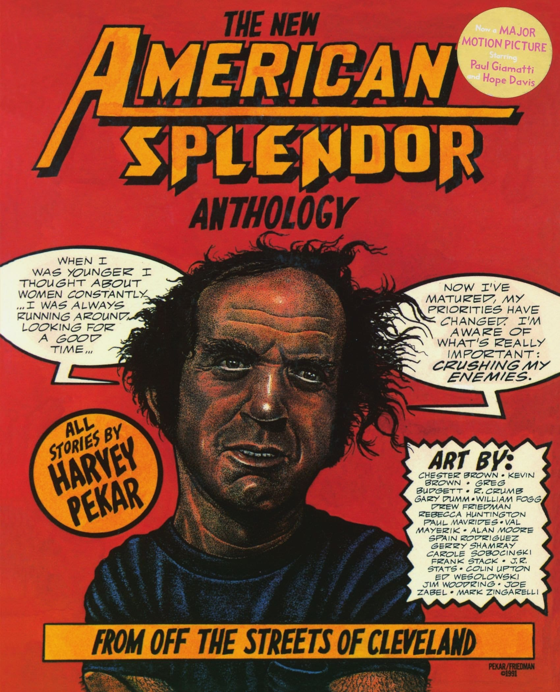
American Splendor
By Harvey Pekar
Harvey Pekar is a true American original, known by many as the blue-collar Mark Twain. For over 25 years he's been writing comic books about his life, chronicling the ordinary and everyday in stories both funny and moving.
Scott Pilgrim
By Bryan Lee O'Malley
Scott Pilgrim's life is totally sweet. He's 23 years old, he's in a rockband, he's "between jobs" and he's dating a cute high school girl. Nothing could possibly go wrong, unless a seriously mind-blowing, dangerously fashionable, rollerblading delivery girl named Ramona Flowers starts cruising through his dreams and sailing by him at parties. Will Scott's awesome life get turned upside-down? Will he have to face Ramona's seven evil ex-boyfriends in battle? The short answer is yes.
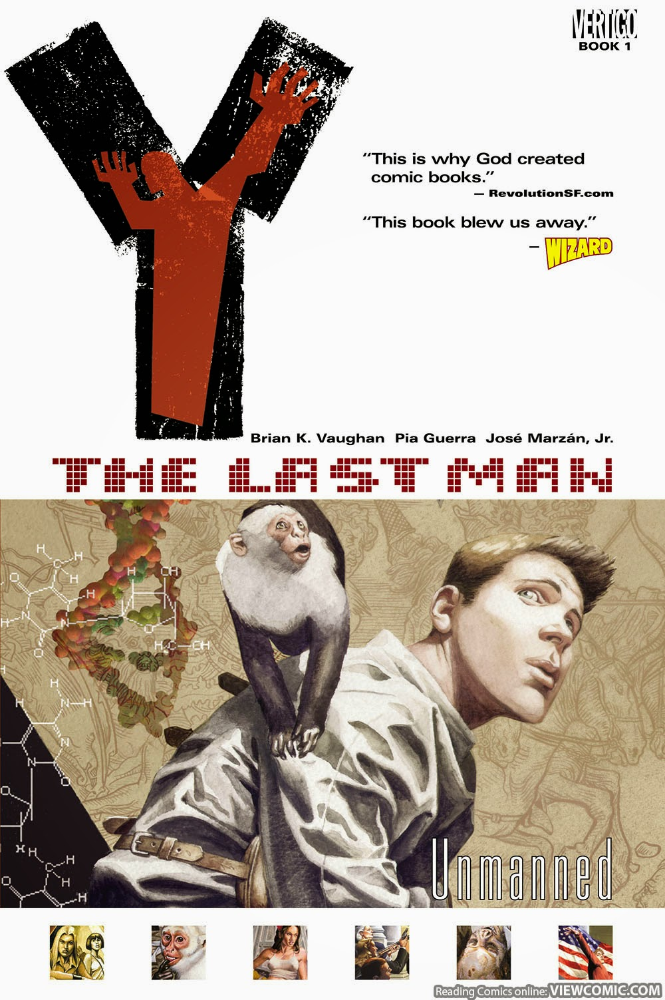
Y: The Last Man
By Brian K. Vaughan
Y is none other than unemployed escape artist Yorick Brown (his father was a Shakespeare buff), and he's seemingly the only male human left alive after a mysterious plague kills all Y-chromosome carriers on earth. But why are he and his faithful companion, the often testy male monkey Ampersand, still alive? He sets out to find the answer (and his girlfriend), while running from angry female Republicans (now running the government), Amazon wannabes that include his own sister (seemingly brainwashed), and other threats.
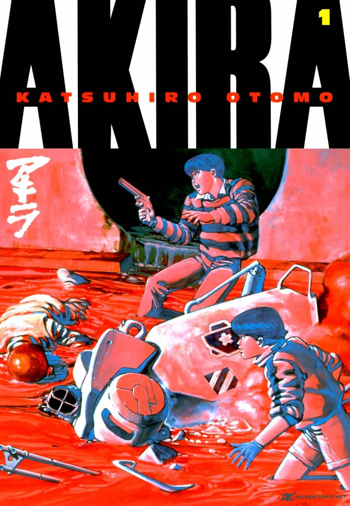
Akira
By Katsuhiro Otomo
The science fiction tale set in 2019 in Tokyo after the city was destroyed by World War III, follows the lives of two teenage friends, Tetsuo and Kaneda, who have a consuming fear of a monstrous power known as Akira.
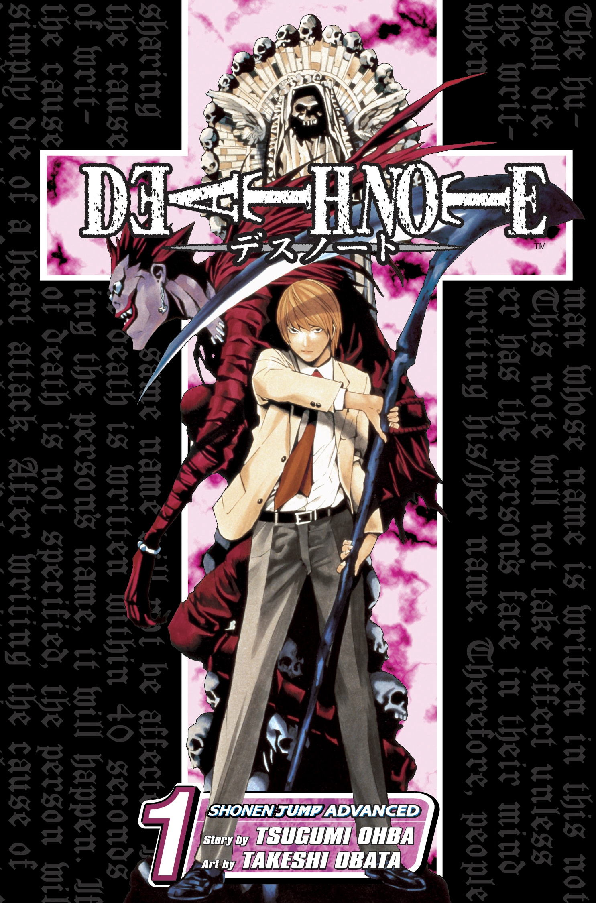
Death Note
By Tsugumi Ohba
Light Yagami is an ace student with great prospects - and he's bored out of his mind. But all that changes when he finds the Death Note, a notebook dropped by a rogue Shinigami, a death god. Any human whose name is written in the notebook dies, and now Light has vowed to use the power of the Death Note to rid the world of evil. But when criminals begin dropping dead, the authorities send the legendary detective L to track down the killer. With L hot on his heels, will Light lose sight of his noble goal... or his life?
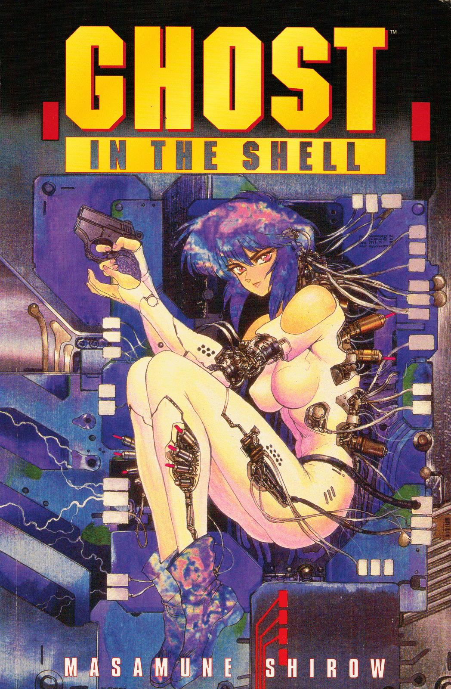
Ghost In The Shell
By Masamune Shirow
In the rapidly converging landscape of the 21st century Major Kusanagi is charged to track down the craftiest and most dangerous terrorists and cybercriminals, including ghost hackers When he track the trail of one hacker, her quest leads her to a world she could never have imagined.
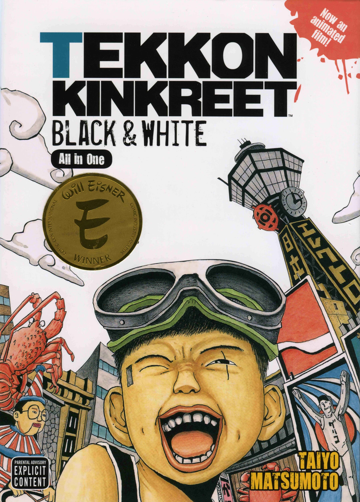
Tekkon Kinkreet: Black and White
By Taiyo Matsumoto
Street urchins Black and White have skyscraper-sized chips on their shoulders, but are fiercely loyal to each other. Black is especially quick to avenge any slight against his dim-witted pal. The result? The citizens of Treasure Town are afraid of them, the police are afraid of them--even the local yakuza gangsters are afraid of them! But when the crime boss known as the "Rat" returns to Treasure Town, it looks like there's gonna be a rumble... The violence in this unique European-influenced manga title is more mindful than it seems at first glance, and the subtle relationships between its unique cast of characters are marked by surprising poignancy.
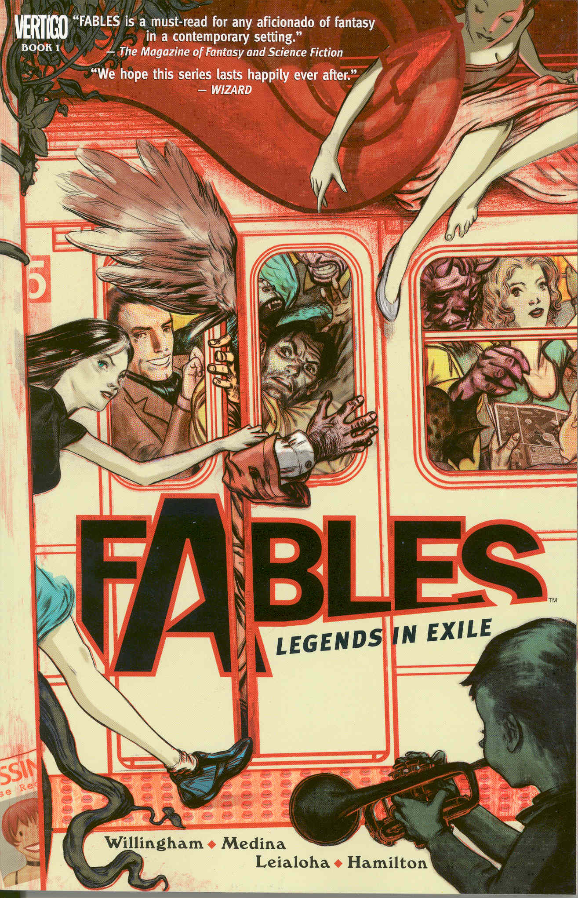
Fables
By Bill Willingham
When a savage creature known only as the Adversary conquered the fabled lands of legends and fairy tales, all of the infamous inhabitants of folklore were forced into exile. Disguised among the normal citizens of modern-day New York, these magical characters have created their own peaceful and secret society within an exclusive luxury apartment building called Fabletown.
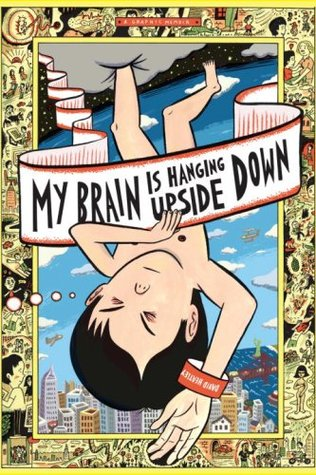
My Brain is Hanging Upside Down
By Dave Heatley
My Brain Is Hanging Upside Down is Heatley's life story told in six different but connected narrative threads. "Sex History" describes every sexual encounter dating back to kindergarten, with details that would make a therapist blush. "Black History" is an unflinchingly honest meditation on his own racism. "Portrait of My Mom" and "Portrait of My Dad" are beautifully paced vignettes, skewering and celebrating his lovably dysfunctional parents. "Family History" tells the story of his family from his great-great-grandparents' lives and closes with the birth of his own children. Woven in and around the larger pieces are "dream comics" that expand on the same themes with a baffling unconscious logic. Every inch of My Brain Is Hanging Upside Down is filled with visceral art and emotionally resonant storytelling at once stunning, truthful, and uncomfortably hilarious.
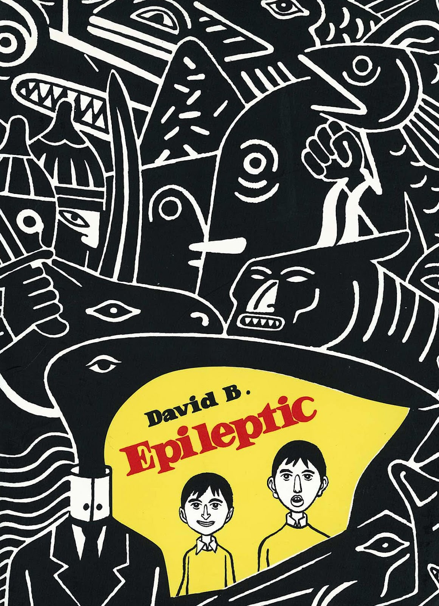
Epileptic
By David B.
David B. was born Pierre-François Beauchard in a small town near Orléans, France. He spent an idyllic early childhood playing with the neighborhood kids and, along with his older brother, Jean-Christophe, ganging up on his little sister, Florence. But their lives changed abruptly when Jean-Christophe was struck with epilepsy at age eleven. In search of a cure, their parents dragged the family to acupuncturists and magnetic therapists, to mediums and macrobiotic communes. But every new cure ended in disappointment as Jean-Christophe, after brief periods of remission, would only get worse.
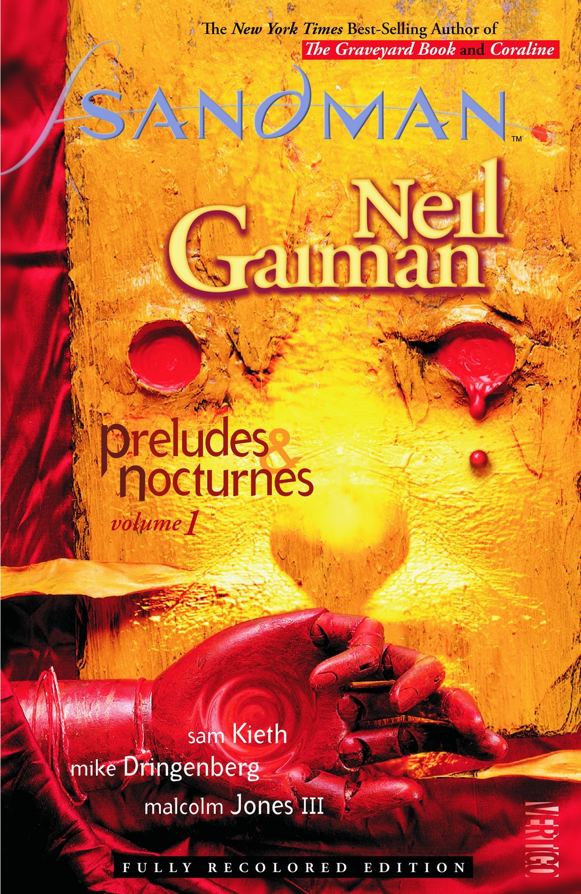
The Sandman
By Neil Gaiman
The Sandman is an American comic book series written by Neil Gaiman and published by DC Comics imprint Vertigo. ... Beginning with issue No. 47, it was placed under the Vertigo imprint. It tells the story of Dream of the Endless, who rules over the world of dreams.
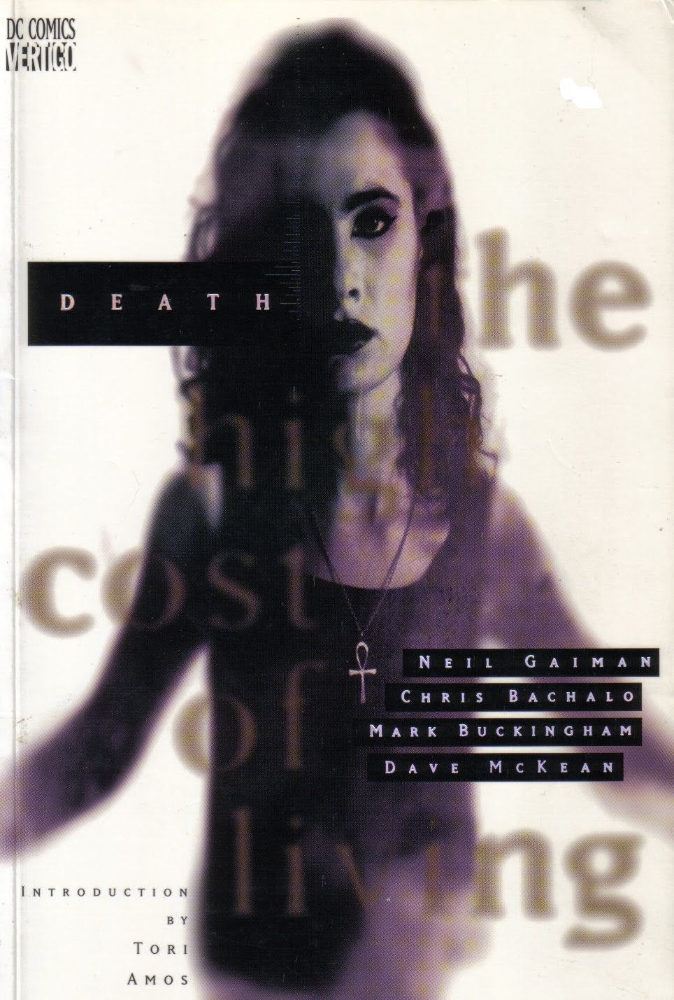
Death
By Neil Gaiman
From the pages of Neil Gaiman's SANDMAN comes the young, pale, perky, and genuinely likable Death. One day in every century, Death walks the Earth to better understand those to whom she will be the final visitor. Today is that day. As a young mortal girl named Didi, Death befriends a teenager and helps a 250-year old homeless woman find her missing heart. What follows is a sincere musing on love, life and (of course) death.
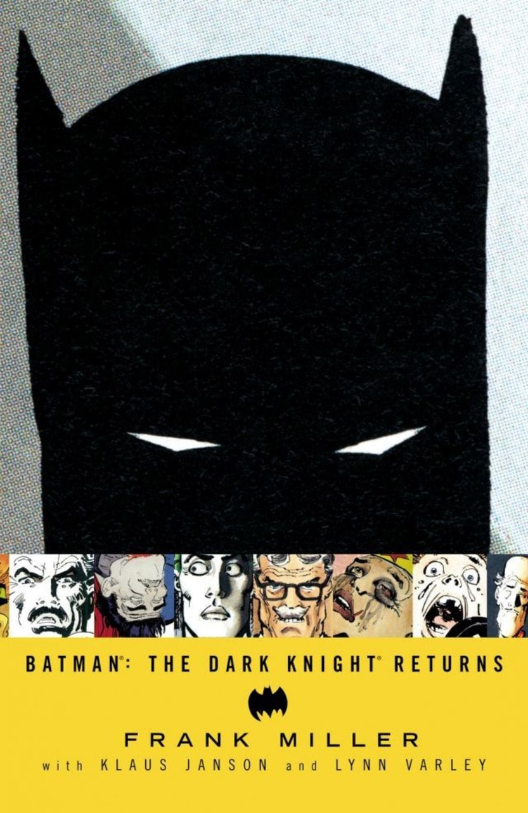
Batman: The Dark Knight Returns
By Frank Miller
This masterpiece of modern comics storytelling brings to vivid life a dark world and an even darker man. Together with inker Klaus Janson and colorist Lynn Varley, writer/artist Frank Miller completely reinvents the legend of Batman in his saga of a near-future Gotham City gone to rot, ten years after the Dark Knight's retirement.
Over fifteen years after its debut, Batman: The Dark Knight Returns remains an undisputed classic and one of the most influential stories ever told in the comics medium.
Collected Love and Rockets
By The Brothers Hernández
The original, seminal Love and Rockets comic book series, which ran for 50 issues from 1981 to 1996, singlehandedly defined the post-underground generation of comics that spawned Daniel Clowes, Chris Ware, and so many others. Now collected into 15 volumes, Love & Rockets is a body of work that The Nation has described as "one of the hidden treasures of our impoverished culture."
Created by brothers Gilbert, Jaime, and Mario Hernandez, three Southern California Mexican-Americans armed with a passion for pop culture and punk rock, Love & Rockets gave a voice to minorities and women for the first time in the medium's then 50-year history and remains one of the greatest achievements in comic book history.
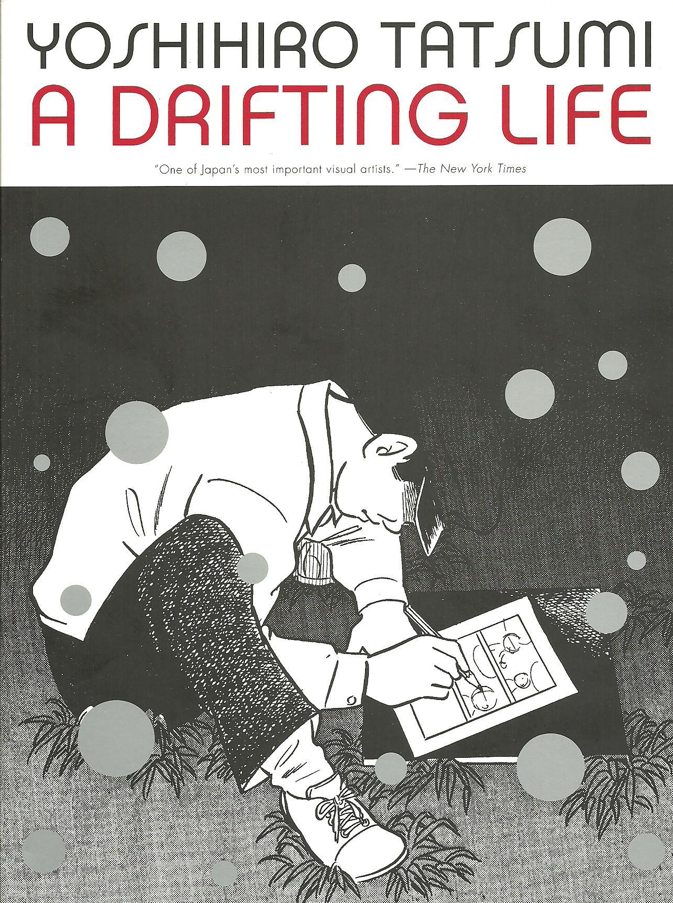
A Drifting Life
By Yoshihiro Tatsumi
The epic autobiography of a manga master. Acclaimed for his visionary short-story collections originally created nearly forty years ago, but just as resonant now as ever—the legendary Japanese cartoonist Yoshihiro Tatsumi has come to be recognized in North America as a precursor of today’s graphic novel movement. A Drifting Life is his monumental memoir eleven years in the making, beginning with his experiences as a child in Osaka, growing up as part of a country burdened by the shadows of World War II.
Spanning fifteen years from August 1945 to June 1960, Tatsumi’s stand-in protagonist, Hiroshi, faces his father’s financial burdens and his parents’ failing marriage, his jealous brother’s deteriorating health, and the innumerable pitfalls that await him in the competitive manga market of mid-twentieth-century Japan.
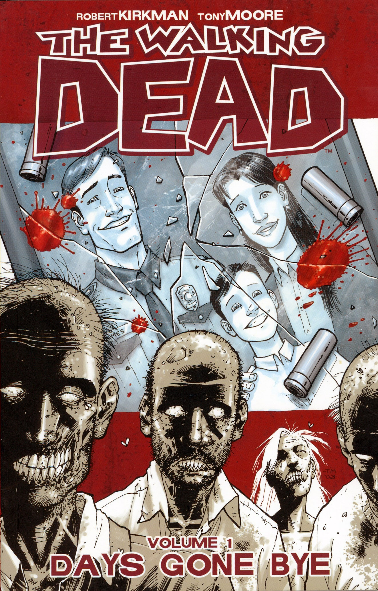
The Walking Dead
By Robert Kirkman
In a world ruled by the dead, we are forced to finally start living. With The Walking Dead #1-48, this compendium features more than one thousand pages chronicling the start of Robert Kirkman's Eisner Award-winning story of zombie horror, from Rick Grimes waking up alone in a hospital, his band of survivors seeking refuge on an isolated farm and the controversial introduction of Woodbury despot, The Governor.
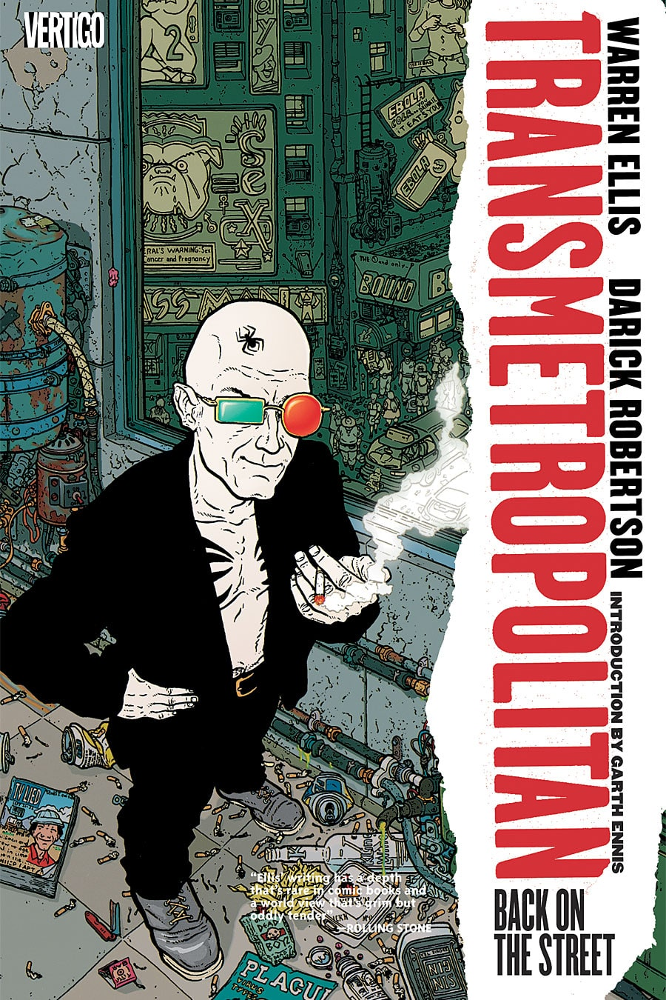
Transmetropolitan
By Warren Ellis
After years of self-imposed exile from a civilization rife with degradation and indecency, cynical journalist Spider Jerusalem is forced to return to a job that he hates and a city that he loathes. Working as an investigative reporter for the newspaper The Word, Spider attacks the injustices of his surreal 23rd Century surroundings. Combining black humor, life-threatening situations, and moral ambiguity, this book is the first look into the mind of an outlaw journalist and the world he seeks to destroy.
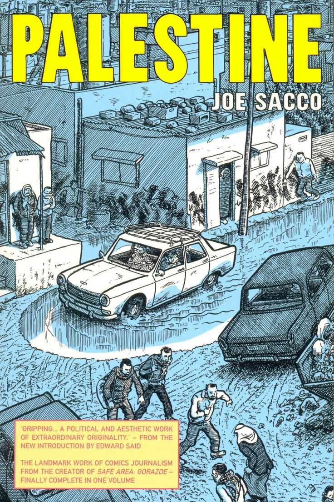
Palestine
By Joe Sacco
Prior to Safe Area Gorazde: The War In Eastern Bosnia 1992-1995—Joe Sacco's breakthrough novel of graphic journalism—the acclaimed author was best known for Palestine, a two-volume graphic novel that won an American Book Award in 1996.
Based on several months of research and an extended visit to the West Bank and Gaza Strip in the early 1990s (where he conducted over 100 interviews with Palestinians and Jews), Palestine was the first major comics work of political and historical nonfiction by Sacco, whose name has since become synonymous with this graphic form of New Journalism. Like Safe Area Gorazde, Palestine has been favorably compared to Art Spiegelman's Pulitzer Prize-winning Maus for its ability to brilliantly navigate such socially and politically sensitive subject matter within the confines of the comic book medium.
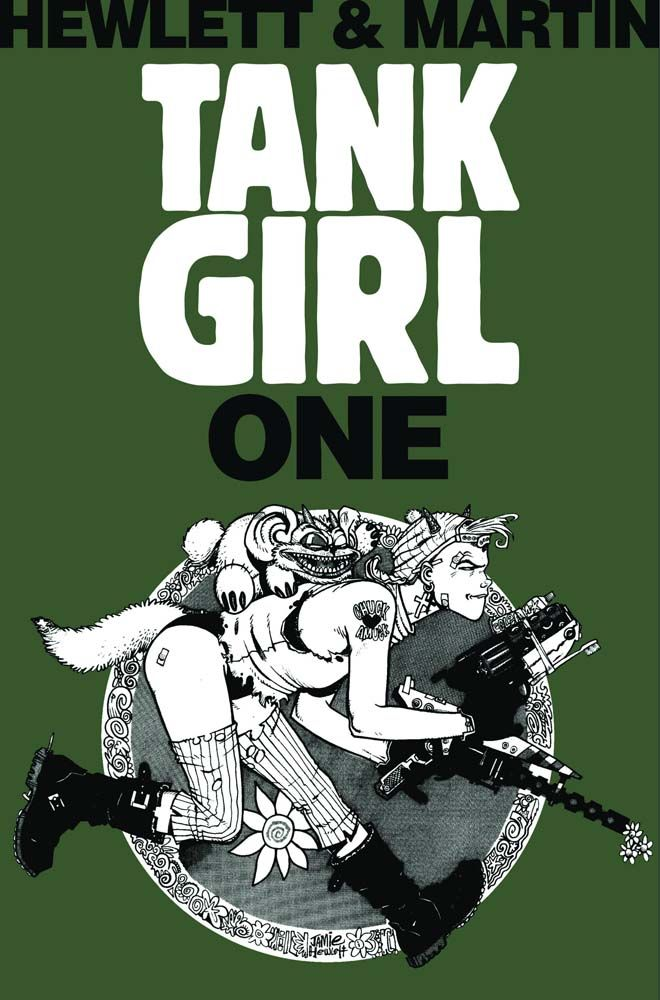
Tank Girl
By Alan C. Martin, Jamie Hewlett
Join everybody’s favourite beer-swilling, chain-smoking, kangaroo-worrying lunatic as she blitzes her way through a dazzling array of bizarre adventures, including bounty hunting, delivering colostomy bags to Australian presidents, kangaroo boxing... and many more outrageous and mind-warping thrills!